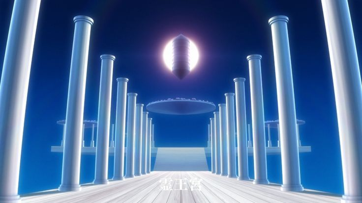
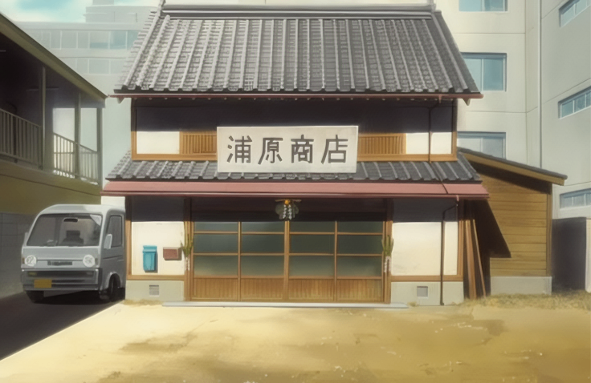
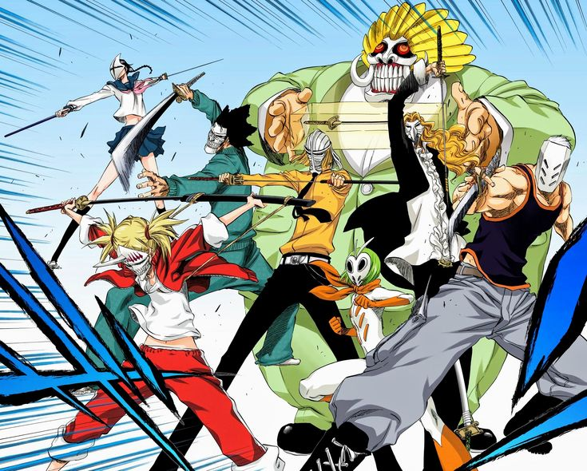
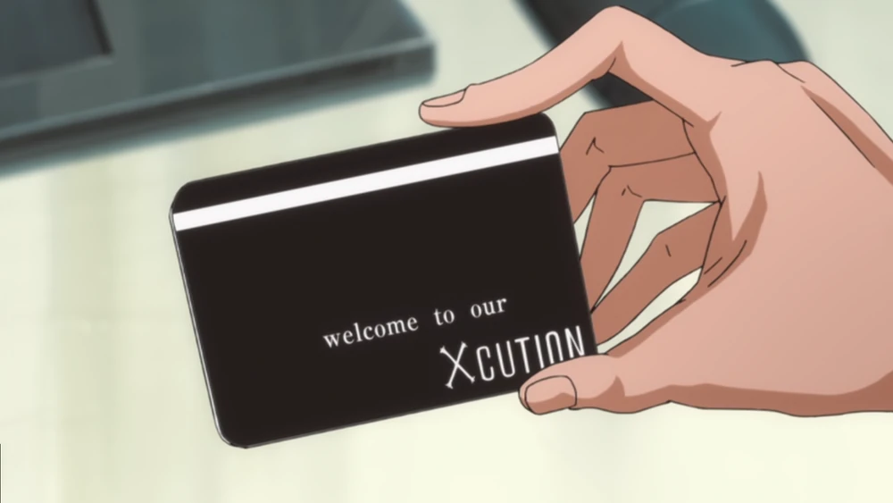

Soul King Palace

The Soul King is the being whose existence maintains the balance between the Human World, Soul Society, and Hueco Mundo. He does not rule directly but serves as the foundation that keeps all realms separated and stable. The Soul King is sealed within a crystal in the Soul King Palace and remains passive and silent. His existence is essential, as without him reality would collapse. He is also revealed to be the father of Yhwach, linking him to the central conflict of the final arc.
Ichibei Hyosube is the leader of the Royal Guard and one of the oldest and most powerful Shinigami in existence. He oversees the Soul King Palace and is responsible for protecting the Soul King and maintaining cosmic balance. Ichibei controls the power of names, allowing him to erase and redefine the abilities and identities of his enemies. Calm and authoritative, he views himself as a guardian of the worlds rather than a servant of Soul Society. He plays a crucial role during the Thousand Year Blood War by confronting Yhwach directly.
Kirinji Tenjiro is a member of the Royal Guard and known as the founder of modern healing techniques in Soul Society. He oversees the hot spring facilities of the Soul King Palace, using extreme conditions to restore and strengthen injured allies. Loud and aggressive in personality, he is nevertheless highly skilled and perceptive. During the Thousand Year Blood War, he plays an important role in restoring Ichigo and defending the Soul King Palace.
Kirio Hikifune is the second officer of the Zero Division and a former captain of the 12th Division of the Gotei 13. She is credited with creating artificial souls and advancing Soul Society technology, achievements that led to her promotion to the Royal Guard. Cheerful and eccentric in nature, she hides immense spiritual power beneath her round appearance, which sharpens when she enters combat. During the Thousand Year Blood War, she aids in defending the Soul King Palace and supporting her allies.
Oetsu Nimaiya is the third officer of the Zero Division and the creator of all Zanpakuto in Soul Society. He resides in the Soul King Palace where he forges and maintains Zanpakuto at their source. Energetic and eccentric, he treats his work with pride while possessing overwhelming combat ability. During the Thousand Year Blood War, he plays a key role in battling the Quincy invaders and protecting the Soul King.
Senjumaru Shutara is the fourth officer of the Zero Division and the creator of the Shinigami uniforms used throughout Soul Society. Calm and refined in demeanor, she is a master weaver who can manipulate cloth and threads with deadly precision. She resides in the Soul King Palace where her abilities serve both practical and combat purposes. During the Thousand Year Blood War, she plays a crucial role in defending the Soul King Palace against the Quincy.
Urahara Shop

Kisuke Urahara is the owner of the Urahara Shop in Karakura Town, selling spiritual goods and assisting both Shinigami and humans. A former captain of the 12th Division, he is known for his intelligence, inventions, and mastery of Kido. He wields the Zanpakuto Benihime and often helps Ichigo Kurosaki with training and equipment. Though exiled, Urahara remains a vital ally whose calm wit and strategy influence many key events. More about Urahara can be found on the Gotei page.
Yoruichi Shihoin is a close friend and ally of Kisuke Urahara who often visits the Urahara Shop in Karakura Town. A former captain of the 2nd Division and head of the Shihoin Clan, she is known for her speed, intelligence, and mastery of hand-to-hand combat. She can transform into a black cat and often assists Urahara in training and covert missions. Though no longer part of Soul Society, Yoruichi remains a skilled and trusted ally in major battles. More about Yoruichi can be found on the Gotei page.
Tessai Tsukabishi works at the Urahara Shop in Karakura Town alongside Kisuke Urahara. Once the Captain of the Kido Corps in Soul Society, he was exiled and now lives quietly in the Human World. Calm and disciplined, he is a master of advanced Kido and healing arts. Though he appears humble, Tessai’s loyalty and strength make him a key ally in Urahara’s operations.
Jinta Hanakari works at the Urahara Shop in Karakura Town with Kisuke Urahara and Ururu Tsumugiya. Though young, he wields a large iron club and has notable spiritual strength. Playful and sometimes lazy, he often teases Ururu but remains loyal to his friends. Despite his small role, Jinta shows courage when danger arises.
Ururu Tsumugiya is a quiet and polite worker at the Urahara Shop in Karakura Town. Despite her shy nature, she has great spiritual power and surprising combat skill. She instinctively reacts to danger and can fight strong enemies when needed. Loyal and hardworking, Ururu supports Urahara and her friends from behind the scenes.
Ririn is a Modified Soul created by Kisuke Urahara to detect Bounts and assist at the Urahara Shop. Small and spirited, she can create illusions and sense reishi over long distances. Though often bossy, she deeply cares for her friends and shows courage in battle.
Kurodo is a Mod-Soul created by Kisuke Urahara and stationed at the Urahara Shop in Karakura Town. He possesses the ability to shapeshift and mimic others’ powers, though he cannot reach their full strength. Often cowardly and verbose, Kurodo serves as comic relief while assisting with Bount detection and other missions.
Noba is a Modified Soul working at the Urahara Shop in Karakura Town, created by Kisuke Urahara. He has the ability to teleport himself and others, and to create wormholes that redirect ranged attacks. Quiet, shy, and often in the background, Noba supports his team with strategic sensing and observation.
Visored

Shinji Hirako is a Visored and former captain of the 5th Division of the Gotei 13. Once betrayed by his lieutenant Sosuke Aizen, he was transformed into a Visored during the Hollowfication incident and exiled to the Human World. Despite his playful and sarcastic nature, Shinji is intelligent, perceptive, and a skilled leader. His Zanpakuto, Sakanade, can invert an opponent’s sense of direction, making him a disorienting foe. After Aizen’s defeat, Shinji was reinstated as captain of the 5th Division, continuing to serve the Soul Society with both experience and wit.
Ichigo Kurosaki is an unofficial member of the Visored, having trained with them to control the Hollow powers within him. Guided by Shinji Hirako and the others, he learned to summon his Hollow mask, granting him immense speed, power, and endurance in battle. Though he never formally joined their ranks, Ichigo fought alongside the Visored during critical conflicts, earning their trust and respect. His connection to both Shinigami and Hollow powers makes him a unique ally who embodies the balance between the two worlds.
Love Aikawa is a Visored and former captain of the 7th Division of the Gotei 13. Relaxed and easygoing, he hides strong combat ability behind his casual attitude. His Zanpakuto, Tengumaru, releases fire-based attacks, which he wields with great power. As a Visored, he combines Shinigami skill with Hollow strength, fighting loyally alongside his allies when needed.
Rojuro Otoribashi is a Visored and former captain of the 3rd Division of the Gotei 13. Known for his calm and artistic personality, he has a deep love for music and often shows refined tastes. His Zanpakuto, Kinshara, uses sound and illusion-based attacks, allowing him to confuse and strike enemies with precision. After his Hollowfication and exile, he later returned to the Soul Society and was reinstated as captain, continuing to serve with composure and loyalty.
Kensei Muguruma is a Visored and former captain of the 9th Division of the Gotei 13. He is stern, disciplined, and often short-tempered, but highly reliable in combat. His Zanpakuto, Tachikaze, releases wind-based attacks with great speed and power. As a Visored, he combines Hollow strength with precise swordsmanship, making him a formidable fighter. After being exiled, Kensei was later reinstated as captain, continuing to serve the Soul Society with loyalty and resolve.
Mashiro Kuna is a Visored and former lieutenant of the 9th Division of the Gotei 13. Energetic and childish, she often acts carefree but is powerful in battle, relying on her strong kicks and agility. As a Visored, she can enhance her speed and strength using her mask and is one of the few capable of firing a Cero. After the Hollowfication incident, she returned to serve as co-lieutenant of the 9th Division alongside Shuhei Hisagi.
Hiyori Sarugaki is a Visored and former lieutenant of the 12th Division of the Gotei 13. She is short-tempered and outspoken, often clashing with her allies, especially Shinji Hirako. Despite her attitude, Hiyori is skilled and determined, wielding her Zanpakuto Kubikiri Orochi, which takes the form of a large cleaver. After becoming a Visored, she continued to fight alongside her comrades with fierce loyalty and spirit.
Hachigen Ushoda is a Visored and former vice chief of the Kido Corps of the Gotei 13. Calm and intelligent, he is an expert in Kido and barrier techniques, often using them to protect and restrain enemies. As a Visored, he combines spiritual mastery with Hollow powers, greatly enhancing his defensive abilities. Despite his quiet nature, Hachigen plays a vital role in supporting his allies during battle.
Lisa Yadomaru is a Visored and former lieutenant of the 8th Division under Shunsui Kyoraku. Calm and disciplined, she is skilled in swordsmanship and possesses great speed and precision. Her Zanpakuto, Haguro Tonbo, takes the form of a long weapon with a heavy end used for powerful strikes. After becoming a Visored, she later returned to the Soul Society and was appointed captain of the 8th Division.
Xcution

Kugo Ginjo is the leader of the Fullbringer group known as Xcution and the first known Substitute Soul Reaper. He is calm, manipulative, and charismatic, often hiding bitterness and distrust toward Soul Society behind a friendly demeanor. Ginjo seeks freedom from the system he believes betrayed him, guiding others while pursuing his own goals. He is ultimately killed by Ichigo Kurosaki during their final confrontation, bringing an end to his rebellion.
Giriko Kutsuzawa is a member of the Fullbringer group Xcution and a former criminal who gained powers through the organization. He is polite and refined on the surface but harbors arrogance and cruelty beneath his manners. His Fullbring ability Time Tells No Lies allows him to impose time based restrictions that strengthen him when followed. Confident in his power, he underestimates his opponents and seeks dominance through control. Giriko is ultimately killed by Kenpachi Zaraki after provoking him in battle.
Riruka Dokugamine is a member of the Fullbringer group Xcution who possesses a strong and emotional personality. She is outspoken, temperamental, and often acts defensively, but shows deep loyalty toward those she grows close to. Her Fullbring ability Dollhouse allows her to trap objects and people inside items she considers cute. Despite her hostility toward outsiders, she ultimately supports Ichigo and survives the conflict with Soul Society.
Jackie Tristan is a member of the Fullbringer group Xcution who values strength and pride above all else. She is aggressive and competitive, believing power defines personal worth, yet struggles with insecurities tied to her past. Her Fullbring ability Dirty Boots increases her physical strength as her boots become dirtier during battle. After losing her powers, she survives the conflict and continues living alongside the other members of Xcution.
Shukuro Tsukishima is a member of the Fullbringer group Xcution and its true mastermind. Calm, polite, and highly manipulative, he is able to psychologically control others by exploiting trust and emotional bonds. His Fullbring ability Book of the End allows him to insert himself into a person’s past, altering memories and relationships. Through this power, he becomes a major threat to Ichigo and his allies by turning their closest friends against him. Tsukishima is ultimately killed by Byakuya Kuchiki during the final battle of the Fullbringer conflict.
Yukio Hans Vorarlberna is a member of the Fullbringer group Xcution who has a withdrawn and insecure personality. He is quiet and resentful, often feeling inferior to others while hiding behind technology and control. His Fullbring ability Invaders Must Die allows him to manipulate and trap others inside digital game like spaces. After losing his powers, he survives the conflict and continues living with the remaining members of Xcution.
Ichigo Kurosaki briefly joins the Fullbringer group Xcution to regain his lost Soul Reaper powers. During this time, he trains with the group while remaining cautious and focused on protecting his friends. Through Fullbring, he awakens new abilities that enhance his combat skills and blend with his latent Soul Reaper powers. However, Xcution ultimately betrays him, revealing their selfish motives and turning against him. Ichigo overcomes their attacks and regains his Soul Reaper abilities, ending his involvement with the group.
Yasutora Sado briefly joins the Fullbringer group Xcution to help Ichigo regain his lost Soul Reaper powers. Calm, loyal, and protective, he trains to awaken his Fullbring, strengthening his armored arms and combat abilities. Chad quickly senses Xcution’s selfish motives and remains guided by his own sense of honor. When the group betrays him and Ichigo, he stands firm, using both strength and strategy to confront them. After the conflict, he continues to support his friends while staying true to his compassionate and courageous nature.
Moe Shishigawara is a member of the Fullbringer group Xcution and a cheerful, carefree individual. He wields the Fullbring Jackpot Knuckle, a brass knuckle on his right hand that lets him manipulate probability to “hit the jackpot” on any object he strikes. Despite his easygoing personality, he uses this ability effectively in combat, breaking objects that should be indestructible. Moe is loyal to his friends and supports them during the Fullbring conflict. He survives the battles and continues to live alongside his allies even after losing his powers.
Other
Orihime Inoue is a human from Karakura Town who later gains spiritual powers and becomes an important ally in battles. She wields the power of Shun Shun Rikka, which lets her heal injuries, reject damage, and protect others. Kind, optimistic, and emotionally intuitive, she often acts as the heart of Ichigo’s group. Though not a traditional fighter, she is courageous enough to face danger to protect those she cares about. In the epilogue she marries Ichigo Kurosaki and becomes the mother of their son Kazui.
Yasutora “Chad” Sado is a human from Karakura Town and one of Ichigo’s closest friends. He is calm, quiet and extremely loyal, always ready to defend others. His powers manifest as a Fullbring, enabling him to encase his right arm in spiritual armor called Brazo Derecho de Gigante, later also developing his left arm. His abilities allow him to unleash powerful energy blasts and greatly enhance his strength in battle. Chad’s gentle nature and vow never to use violence for selfish reasons define him even in the heat of conflict.
Ryuken Ishida is a Quincy and a skilled doctor living in Karakura Town, as well as the father of Uryu Ishida. He is a calm, serious man who distanced himself from Quincy traditions after the death of his wife, Kanae Katagiri. Ryuken is highly proficient in Quincy techniques, wielding a powerful spirit bow and fighting with great precision and composure. Despite his cold and distant demeanor, he genuinely cares for his son and supports him in crucial moments. During the Thousand-Year Blood War, he plays an important role by assisting in actions against Yhwach and supporting the Soul Reapers.
Isshin Kurosaki is a former Captain of the 10th Division of the Gotei 13 who lives in the Human World and runs a clinic in Karakura Town. After leaving Soul Society, he gave up his Shinigami powers to save his wife, Masaki Kurosaki, and settled among humans. Calm, caring, and sometimes playful, Isshin protects his family while remaining aware of spiritual threats. He guides his son, Ichigo, in mastering his powers and assists allies when dangerous enemies appear. Though rarely returning to Soul Society, he remains a formidable fighter, ready to intervene in critical moments.
Masaki Kurosaki was a human with latent Quincy abilities who lived in Karakura Town and married Isshin Kurosaki. Calm, kind, and caring, she devoted herself to her family and was deeply loved by her husband and son, Ichigo. Her Quincy heritage allowed her to sense spiritual threats and defend others, though she mostly lived as a normal human. Masaki’s life ended tragically when a Hollow attacked her, an event that profoundly affected her family and shaped Ichigo’s path as a Soul Reaper. Her legacy continues through her family and the spiritual abilities inherited by Ichigo.